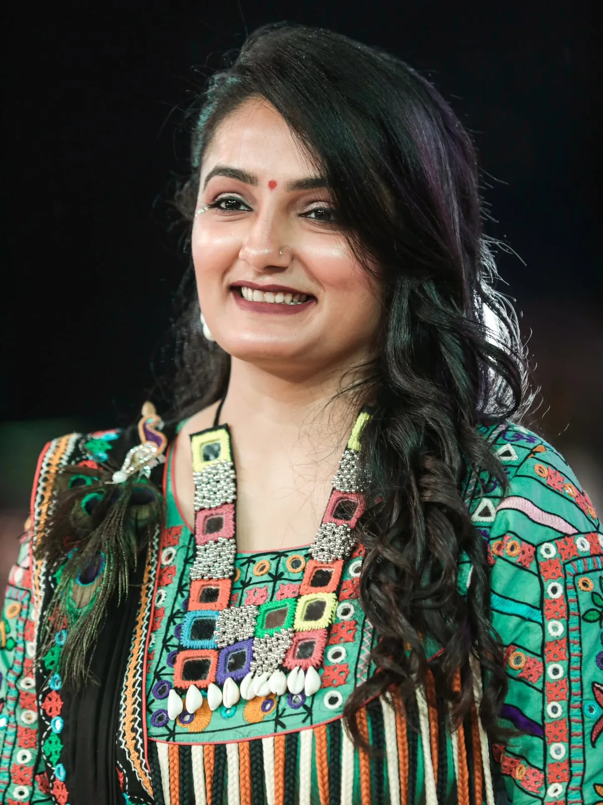
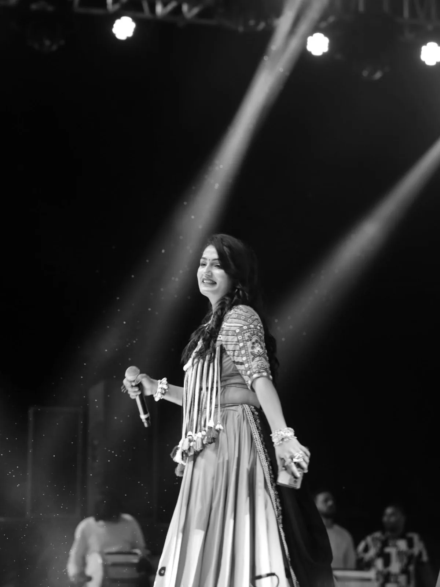
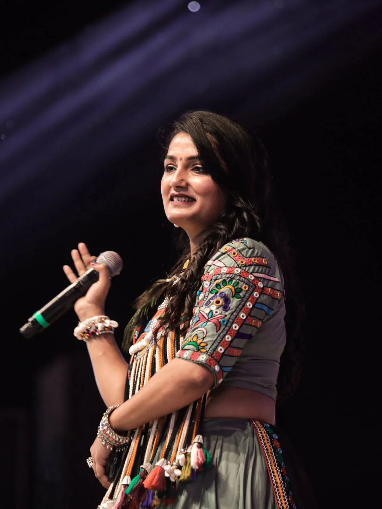
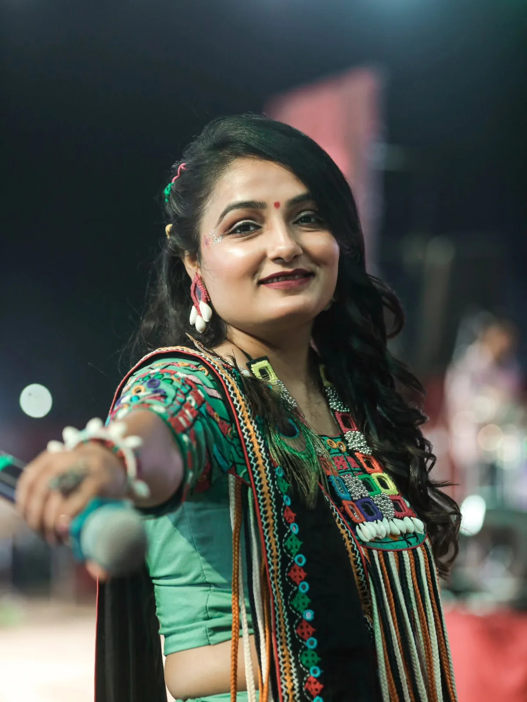
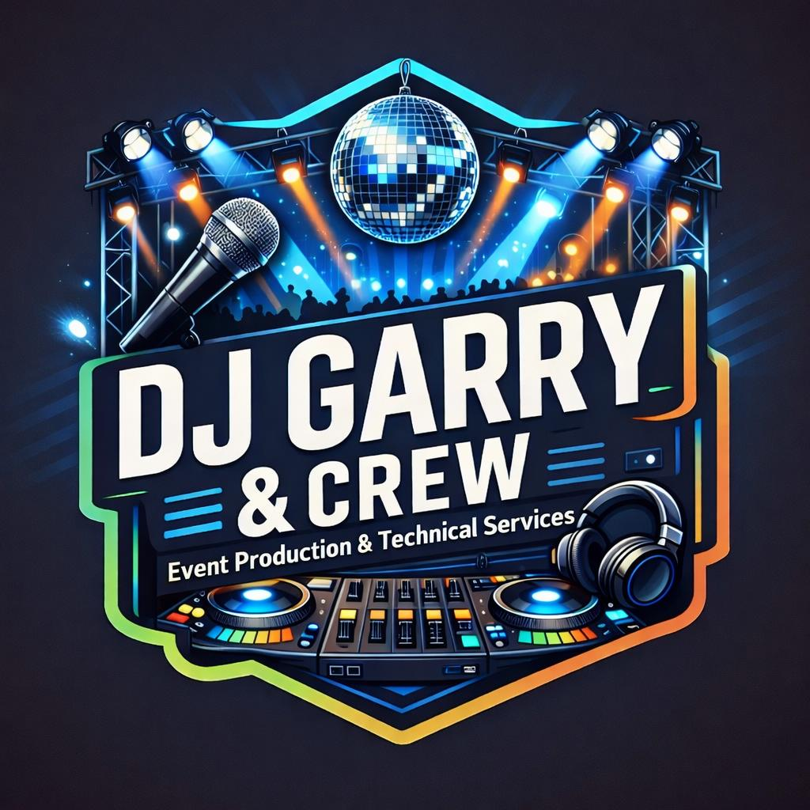

Fusion4 Events × Indian Nomads in Ingolstadt e.V. × SK Edits
Garba Mahotsav München 2026 mit Apexa Pandya & Live-Band
Münchens größtes indisches Kulturfest!
Ein Ticket. Drei Erlebnisse. Eine unvergessliche Nacht! 💃🪔🎶
Erleben Sie die lebendige Seele Indiens mit Live Garba Raas, Bhajan Sandhya & DJ Dandiya Night — alles unter einem Dach.
Datum: Sonntag, 25. Oktober 2026
Uhrzeit: 12:30 – 22:00 Uhr
Location: Zenith – Die Kulturhalle, Lilienthalallee 29, 80939 München
Künstlerin: Apexa Pandya live in Concert, mit Live-Band & DJ
Tickets: Early Bird ab 15,99 € — nur solange der Vorrat reicht!
Garba in München wie nie zuvor
Das Garba Mahotsav München 2026 bringt Europas größtes Sharad-Purnima-Raas-Garba in das Zenith – Die Kulturhalle, eine der bekanntesten Veranstaltungshallen Münchens. Am Sonntag, 25. Oktober 2026, kommen mehr als 2.000 Gäste aus ganz Deutschland und Europa zusammen — für einen ganzen Tag und Abend voller Garba, Raas und Dandiya, den beliebten Festtänzen aus Gujarat, getanzt in fließenden Kreisen zu Live-Musik und Dhol-Trommeln.
Ob Sie mit Garba zu jedem Navratri aufgewachsen sind oder zum ersten Mal eine indische Festivalnacht in Deutschland erleben — dieses Fest ist offen für alle. Ein Ticket bietet drei Erlebnisse unter einem Dach: Live Garba Raas, Bhajan Sandhya und DJ Dandiya Night — mit spektakulärer Bühnenshow, sattvischen Essensständen und einer Halle voller Farben, Musik und Gemeinschaft. Verpassen Sie nicht Münchens größtes Fest indischer Kultur, Musik, Hingabe und Verbundenheit — eine Nacht, ein Fest, Millionen Erinnerungen.
Apexa Pandya live in Concert
Headlinerin des Mahotsav ist Apexa Pandya, eine der beliebtesten Garba-Stimmen Gujarats, live in München mit ihrer kompletten Band. Von gefühlvollen Bhajans während der Bhajan Sandhya bis zu energiegeladenen Non-Stop-Raas-Garba-Sets — Apexa Pandya und ihre Musiker halten die Tanzfläche vom Nachmittag bis tief in die Nacht in Bewegung, ergänzt durch DJ-Musik zwischen den Live-Sets.




Programm-Highlights
Ein Ticket. Drei Erlebnisse.
- 🪔 Bhajan Sandhya — spirituelle Musik mit Apexa Pandya und Gast-Künstlern zur Feier von Sharad Purnima, der Vollmondnacht
- 💃 Live Garba Raas & traditionelles Dandiya — traditionelle Tanzkreise, Live-Dhol und Europas größte Garba-Bühne, mit Apexa Pandya & Live-Band
- 🎧 DJ Dandiya Night — Bombay-Style-Beats mit DJ Garry & Crew; bringen Sie Ihre Dandiya-Stöcke mit oder holen Sie sich ein Paar vor Ort
Ein Navratri-Geschenk von Fusion4Events 🎁
Und für alle:
- 🌿 100% alkoholfreie Veranstaltung — ein reines, festliches Erlebnis für alle
- 🍛 Sattvisches Essen — vegetarische Festtagsküche und Getränke den ganzen Tag
- 👨👩👧 Kinder- & familienfreundlich — Kinder sind willkommen; ein Fest indischer Kultur, Musik und Gemeinschaft für alle Generationen
Veranstalter, Sponsoren & Partner

Datum, Location & Anfahrt
Sonntag, 25. Oktober 2026, 12:30 – 22:00 Uhr
Zenith – Die Kulturhalle, Lilienthalallee 29, 80939 München
Die Zenith Kulturhalle liegt in München-Freimann, nur wenige Gehminuten von der U-Bahn-Station Freimann (U6) entfernt und vom Münchner Zentrum aus schnell erreichbar. Parkplätze sind in der Nähe vorhanden, am Veranstaltungstag empfehlen wir jedoch die öffentlichen Verkehrsmittel. Sie reisen von außerhalb an? Die Location ist über die A9 bestens angebunden — ideal für Gäste aus Ingolstadt, Nürnberg, Stuttgart oder Frankfurt.
Tickets
🔥 Limitierte Early-Bird-Tickets ab 15,99 €! Ein Ticket umfasst alle drei Erlebnisse — Live Garba Raas, Bhajan Sandhya und DJ Dandiya Night.
Fragen zu Gruppenbuchungen, Ständen oder Sponsoring? Kontaktieren Sie die Veranstalter direkt:
- WhatsApp: +49 15560 200235
- E-Mail: info@fusion4events.com
Häufige Fragen
- Wie buche ich Tickets für das Garba Mahotsav München 2026?
- Buchen Sie online über den Button „Tickets buchen" auf dieser Seite oder direkt beim Veranstalter per WhatsApp unter +49 15560 200235 bzw. per E-Mail an info@fusion4events.com.
- Wann und wo findet die Veranstaltung statt?
- Sonntag, 25. Oktober 2026, 12:30 bis 22:00 Uhr im Zenith – Die Kulturhalle, Lilienthalallee 29, 80939 München.
- Wie komme ich zum Zenith – Die Kulturhalle?
- Die Location liegt in München-Freimann, wenige Gehminuten von der U6-Station Freimann entfernt. Parkplätze sind vorhanden; am Veranstaltungstag empfehlen wir die öffentlichen Verkehrsmittel.
- Gibt es Essen auf der Veranstaltung?
- Ja — sattvisches (rein vegetarisches) indisches Essen und Getränke gibt es den ganzen Tag an Essensständen.
- Wird Alkohol ausgeschenkt?
- Nein — das Garba Mahotsav München ist eine zu 100% alkoholfreie Veranstaltung: festlich, spirituell und familienfreundlich.
- Ist die Veranstaltung familienfreundlich? Kann ich Kinder mitbringen?
- Ja, Kinder sind herzlich willkommen. Details zu Kindertickets und Familienangeboten werden mit den Ticketkategorien bekannt gegeben.
- Gibt es einen Dresscode?
- Traditionelle Kleidung — Chaniya Choli, Kediyu — ist gern gesehen, aber kein Muss. Tragen Sie festliche Kleidung, in der Sie tanzen können, und bequeme Schuhe.
- Was soll ich mitbringen?
- Nur Ihr Ticket und gute Laune! Dandiya-Stöcke sind in der Regel vor Ort erhältlich; eigene dürfen gerne mitgebracht werden.
Veranstalter & Kontakt
Das Garba Mahotsav München 2026 wird von Fusion4 Events in Zusammenarbeit mit Indian Nomads in Ingolstadt e.V. und SK Edits veranstaltet. Für Tickets, Sponsoring, Stände oder Presseanfragen:
- E-Mail: info@fusion4events.com
- WhatsApp: +49 15560 200235
- Instagram: @fusion4events · Facebook: Fusion4 Events · TikTok: @fusion4events